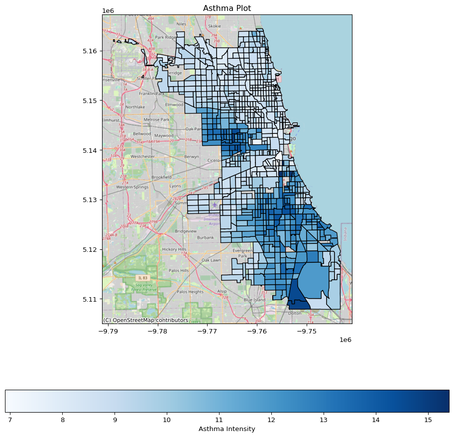
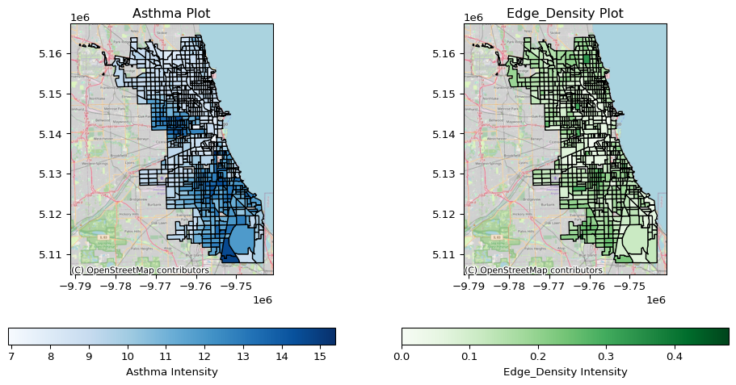
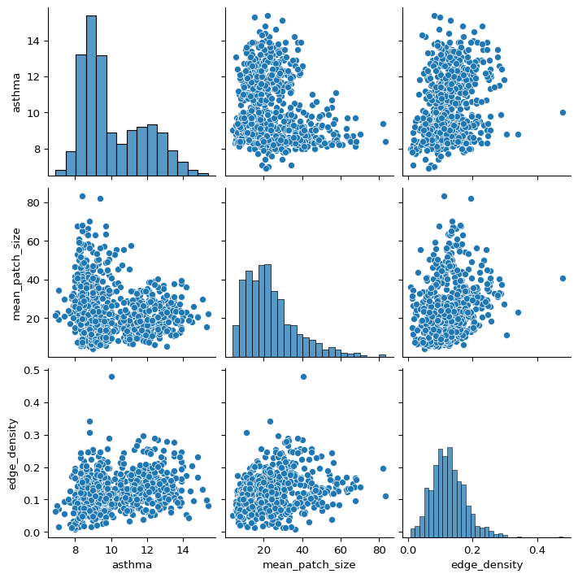
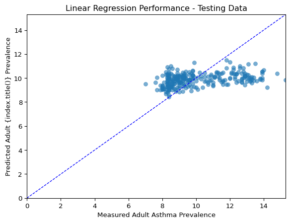
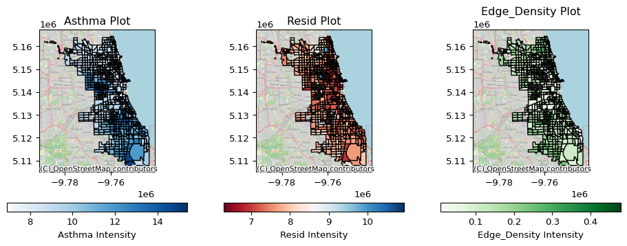

import sys
print(sys.executable)
print(sys.version)/users/brianyandell/miniconda3/envs/earth-analytics-python/bin/python
3.11.10 | packaged by conda-forge | (main, Oct 16 2024, 01:26:25) [Clang 17.0.6 ]import sys
print(sys.executable)
print(sys.version)/users/brianyandell/miniconda3/envs/earth-analytics-python/bin/python
3.11.10 | packaged by conda-forge | (main, Oct 16 2024, 01:26:25) [Clang 17.0.6 ]Vegetation has the potential to provide many ecosystem services in urban areas, such as cleaner air and water and flood mitigation. However, the results are mixed on relationships between a simple measurement of vegetation cover (such as average NDVI, a measurement of vegetation health) and human health. We do, however, find relationships between landscape metrics that attempt to quantify the connectivity and structure of greenspace and human health. These types of metrics include mean patch size, edge density, and fragmentation.
Read More: Study by Tsai et al. 2019 on the relationship between edge density and life expectancy in Baltimore, MD. The authors also discuss the influence of scale (e.g. the resolution of the imagery) on these relationships, which is important for this case study.
In this notebook, you will write code to calculate patch, edge, and fragmentation statistics about urban greenspace in Chicago. These statistics should be reflective of the connectivity and spread of urban greenspace, which are important for ecosystem function and access. You will then use a linear model to identify statistically significant correlations between the distribution of greenspace and health data compiled by the US Center for Disease Control.
For this project, we are going to split up the green space (NDVI) data by census tract, because this matches the human health data from the CDC. If we were interested in the average NDVI at this spatial scale, we could easily use a source of multispectral data like Landsat (30m) or even MODIS (250m) without a noticeable impact on our results. However, because we need to know more about the structure of green space within each tract, we need higher resolution data. For that, we will access the National Agricultural Imagery Program (NAIP) data, which is taken for the continental US every few years at 1m resolution. That’s enough to see individual trees and cars! The main purpose of the NAIP data is, as the name suggests, agriculture. However, it’s also a great source for urban areas where lots is happening on a very small scale.
The NAIP data for the City of Chicago takes up about 20GB of space. This amount of data is likely to crash your kernel if you try to load it all in at once. It also would be inconvenient to store on your hard drive so that you can load it in a bit at a time for analysis. Even if your are using a computer that would be able to handle this amount of data, imagine if you were analysing the entire United States over multiple years!
To help with this problem, you will use cloud-based tools to calculate your statistics instead of downloading rasters to your computer or container. You can crop the data entirely in the cloud, thereby saving on your memory and internet connection, using rioxarray.
This notebook does not have pre-built tests. You will need to write your own test code to make sure everything is working the way that you want. For many operations, this will be as simple as creating a plot to check that all your data lines up spatially the way you were expecting, or printing values as you go. However, if you don’t test as you go, you are likely to end up with intractable problems with the final code.
Import necessary packages
%pip install -q -e ..Note: you may need to restart the kernel to use updated packages.from landmapyr.initial import robust_code, create_data_dirrobust_code()
data_dir = create_data_dir('chicago-greenspace')We use the Center for Disease Control (CDC) Places dataset for human health data to compare with vegetation. CDC Places also provides some modified census tracts, clipped to the city boundary, to go along with the health data. We start by downloading the matching geographic data, and then select the City of Chicago.
You can obtain urls for the U.S. Census Tract shapefiles from the TIGER service. You’ll notice that these URLs use the state FIPS, which you can get installing and using the us package.
tract_path = shp_tract_path(data_dir, place='chicago-tract')chi_tract_gdf = download_census_tract(tract_path, placename='Chicago')if not os.path.exists(tract_path):tract_gdf[tract_gdf.PlaceName == placename]There is no need to cache the full dataset – stick with your pared down version containing only Chicago.
from landmapyr.cdcplaces import shp_tract_path, download_census_tract# Set up the census tract path
tract_path = shp_tract_path(data_dir, 'chicago-tract')
chi_tract_gdf = download_census_tract(tract_path, 'Chicago')Code to save HV plot:
import hvplot.pandas
from landmapyr.hv_plots import hvplot_tract_gdf
chi_tract_hv = hvplot_tract_gdf(chi_tract_gdf)
hvplot.save(chi_tract_hv, "chi_tract.html")NOW NEED TO incorporate this image
Reflect and Respond
What do you notice about the City of Chicago from the coarse satellite image? Is green space evenly distributed? What can you learn about Chicago from websites, scientific papers, or other resources that might help explain what you see in the site map?
WRITE YOUR CITY OF CHICAGO DATA DESCRIPTION AND CITATION HERE
The U.S. Center for Disease Control (CDC) provides a number of health variables through their Places Dataset that might be correlated with urban greenspace. For this assignment, start with adult asthma. Try to limit the data as much as possible for download. Selecting the state and county is one way to do this.
&$limit= parameter to increase the number of rows downloaded. You can find more information on the Paging page of the SODA API documentation'data_value' to something descriptive, and possibly selecting a subset of columns.from landmapyr.cdcplaces import download_cdc_disease, join_tract_cdc
from landmapyr.plots import plot_gdfs_map
from landmapyr.naip import naip_path, download_naip_scenes, ndvi_naip_df# Preview asthma data
cdc_df = download_cdc_disease(data_dir, 'asthma')
cdc_df| year | tract | asthma | asthma_ci_low | asthma_ci_high | data_value_unit | totalpopulation | totalpop18plus | |
|---|---|---|---|---|---|---|---|---|
| 0 | 2022 | 17031031100 | 8.4 | 7.5 | 9.5 | % | 4691 | 4359 |
| 1 | 2022 | 17031031900 | 8.6 | 7.7 | 9.7 | % | 2522 | 2143 |
| 2 | 2022 | 17031062600 | 8.3 | 7.3 | 9.3 | % | 2477 | 1760 |
| 3 | 2022 | 17031070101 | 8.9 | 7.9 | 9.9 | % | 4171 | 3912 |
| 4 | 2022 | 17031081100 | 9.0 | 8.0 | 10.1 | % | 4187 | 3951 |
| ... | ... | ... | ... | ... | ... | ... | ... | ... |
| 1323 | 2022 | 17031834900 | 13.5 | 12.1 | 15.0 | % | 1952 | 1451 |
| 1324 | 2022 | 17031828601 | 9.8 | 8.8 | 11.0 | % | 4198 | 3227 |
| 1325 | 2022 | 17031843700 | 8.4 | 7.5 | 9.5 | % | 2544 | 1891 |
| 1326 | 2022 | 17031829700 | 10.8 | 9.6 | 12.1 | % | 3344 | 2524 |
| 1327 | 2022 | 17031829100 | 10.2 | 9.1 | 11.5 | % | 3512 | 2462 |
1328 rows × 8 columns
GeoDataFrame with the asthma prevalence DataFrame using the .merge() method..astype('int64')tract_cdc_gdf = join_tract_cdc(chi_tract_gdf, cdc_df)
plot_gdfs_map(tract_cdc_gdf, column='asthma')
Reflect and Respond
Write a description and citation for the asthma prevalence data. Do you notice anything about the spatial distribution of asthma in Chicago? From your research on the city, what might be some potential causes of any patterns you see?
ADD YOUR CDC PLACES DESCRIPTION AND CITATION HERE
NAIP data are freely available through the Microsoft Planetary Computer SpatioTemporal Access Catalog (STAC).
pystac_client.Client.open().search() for NAP data
collections=["naip"]intersects=shapely.to_geojson(tract_geometry)datetime=f"{year}"search.assets['image'].hrefpd.DataFrame or dict for laterpystac_client.exceptions.APIErrorWarning
As always – DO NOT try to write this loop all at once! Stick with one step at a time, making sure to test your work. You also probably want to add a
breakinto your loop to stop the loop after a single iteration. This will help prevent long waits during debugging.
Download NAIP scenes if not done already. Might want special case if some index values already downloaded.
naip_index_path = naip_path(data_dir, 'chicago')
%store -r chi_scenes_df
try:
chi_scenes_df
except NameError:
chi_scenes_df = download_naip_scenes(naip_index_path, tract_cdc_gdf)
%store chi_scenes_dfCalculate some metrics to get at different aspects of the distribution of greenspace in each census tract. These fragmentation statistics can be implemented with the scipy package. Some examples include:
label function from scipy.ndimageWhat is convolution?
Referring to differential equations, convolution is an approximation of the Laplace transform. For the purposes of calculating edge density, convolution means that we are taking all the possible 3x3 chunks for our image, and multiplying it by the kernel:
\[ \text{Kernel} = \begin{bmatrix} 1 & 1 & 1 \\ 1 & -8 & 1 \\ 1 & 1 & 1 \end{bmatrix} \]
The result is a matrix the same size as the original, minus the outermost edge. If the center pixel is the same as the surroundings, its value in the final matrix will be \(-8 + 1 + 1 + 1 + 1 + 1 + 1 + 1 + 1 = 0\). If it is higher than the surroundings, the result will be negative, and if it is lower than the surroundings, the result will be positive. As such, the edge pixels of our patches will be negative.
GeoDataFrame using e.g. .loc[[0]].DataFrame that match the census tract.Feel free to add any other statistics you think are relevant, but make sure to include a fraction vegetation, mean patch size, and edge density.
rioxarray to open up a connection to the STAC asset, just like you would a file on your computer.clip_box parameter auto_expand and the clip parameter all_touched to make sure you don’t end up with an empty arraychi_scenes_df, while NDVI computations are stored in CSV file at naip_index_path; after computations, ndvi_naip_df() (need better name) returns the DataFrame ndvi_index_df.ndvi_index_df = ndvi_naip_df(naip_index_path, tract_cdc_gdf, chi_scenes_df) 0%| | 0/788 [00:00<?, ?it/s]Before running any statistical models on your data, check that your download worked. You should see differences in both median income and mean NDVI across the city.
Create a plot that contains:
from landmapyr.naip import merge_ndvi_cdc
from landmapyr.explore import var_trans, train_test
from landmapyr.plots import plot_gdfs_map, plot_matrix, plot_train_testndvi_cdc_gdf = merge_ndvi_cdc(tract_cdc_gdf, ndvi_index_df)
plot_gdfs_map(ndvi_cdc_gdf)
Do you see any similarities in your plots? Do you think there is a relationship between adult asthma and any of your vegetation statistics in Chicago? Relate your visualization to the research you have done (the context of your analysis) if applicable.
ADD YOUR PLOT DESCRIPTION HERE
One way to find if there is a statistically significant relationship between asthma prevalence and greenspace metrics is to run a linear ordinary least squares (OLS) regression and measure how well it is able to predict asthma given your chosen fragmentation statistics.
Before fitting an OLS regression, you should check that your data are appropriate for the model.
Write a model description for the linear ordinary least-squares regression that touches on:
ADD YOUR CDC PLACES DESCRIPTION AND CITATION HERE
When fitting statistical models, you should make sure that your data meet the model assumptions through a process of selection and/or transformation. You can select data in various ways:
You can transform data:
log to manage right skew sklearn.preprocessing.PowerTransformerlog(x - min(x) + 1) or (x - min(x))/(max(x) - min(x)))Tip
Keep in mind that data transforms like a log transform or a PCA must be reversed (or rescaled) after modeling for the results to be meaningful.
hvplot.scatter_matrix() to create an exploratory plot of data.NaN values, and drop rows and/or columns. Use the .dropna() method to drop rows with NaN values.logndvi_cdc_gdf = var_trans(ndvi_cdc_gdf)
plot_matrix(logndvi_cdc_gdf)
EXPLAIN YOUR SELECTION AND TRANSFORMATION PROCESS HERE
The scikitlearn library has a slightly different approach than many software packages, emphasizing generic model performance measures like cross-validation and importance over coefficient p-values and correlation. The scikitlearn approach generalizes more smoothly to machine learning (ML) models where the statistical significance is harder to derive mathematically.
scikitlearn documentation or ChatGPT as a starting point, split your data into training and testing datasets with train_test_split().logndvi_cdc_test, reg, logndvi_cdc_gdf = train_test(logndvi_cdc_gdf)
plot_train_test(logndvi_cdc_test)
We always need to think about bias, or systematic error, in model results. Every model is going to have some error, but we’d like to see that error evenly distributed. When the error is systematic, it can be an indication that we are missing something important in the model.
In geographic data, we generally expect adjacent places to be more similar than distant places (spatial autocorrelation). Linear models can address location through trends (as part of expected mean) or autocorrelation (as part of the variance-covariance structure).
predicted - measured) for all census tractsplot_gdfs_map(logndvi_cdc_gdf, column=['asthma','resid','edge_density'], color=['Blues','RdBu','Greens'])
GeoViews code not shown:
import holoviews as hv
from landmapyr.gvplot import gvplot_ndvi_index, gvplot_resid
model_fit = gvplot_ndvi_index(ndvi_cdc_gdf)
resid = gvplot_resid(logndvi_cdc_gdf, reg, yvar='asthma')
models_gv = (model_fit[0] + resid + model_fit[1])
hv.save(models_gv, 'bigdata_model.html')Reflect and Respond
What do you notice about your model from looking at the error plots? What additional data, transformations, or model type might help improve your results?
Tsai, Wei-Lun, Yu-Fai Leung, Melissa R. McHale, Myron F. Floyd, and Brian J. Reich. 2019. “Relationships Between Urban Green Land Cover and Human Health at Different Spatial Resolutions.” Urban Ecosystems 22 (2): 315–24. https://doi.org/10.1007/s11252-018-0813-3.
Bickel PJ, Doksum K (1981) “An Analysis of Transformation Revisited” JASA 76. https://doi.org/10.2307/2287831.
DESCRIBE AND INTERPRET YOUR IMAGE HERE